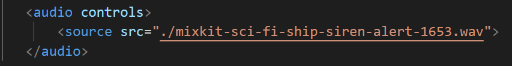

Have you ever wondered how to import an audio in html? Well, it is possible with the help of audio tag.
But before that we need about the audio importers.
There are many audio importers one of them is wav.
We can control the controls of the audio by using controls
Let's look at an example.